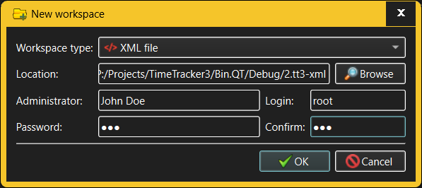

New Workspace dialog
The New Workspace dialog is invoked when the user, having logged in to
TimeTracker3, wants to create a new workspace. As such, it will be invoked at
least once before any useful work can be done.

The fields in the New Workspace dialog allow the user to specify:
- Workspace type - TimeTracker3 allows using a variety of
technologies to store workspaces, the simplest one of which is storing the
entire workspace in a single XML file in the local file system (this is the
choice ideal for individual users who need to track their working time).
Other workspace types will be available depending on the installed
TimeTracker3 configuration and may range from local (or remote) databases to
a full-fledged remote storage.
- Workspace location - a workspace is uniquely identified
by its "location", the exact nature of which varies with the workspace type.
For XML file workspaces this will be the full path to the XML file where the
workspace resides. Workspace locations are not directly editable;
instead, the Browse button will pop up the dialog where the
user can choose the location of the newly created workspace in a manner
appropriate for the chosen workspace type.
- Administrator - every TimeTracker3 workspace is
required to have an "administrator" - a User who has an Account with the
Administrator capability. This field is for specifying the "real name" of
such user.
- Login - the login identifier for the Account that will
be created with an Administrator privilege. This may or may not match the
Administrator User's "real name" - the choice is up to whoever created the
workspace.
- Password - the administrator account created in the new
workspace can, and normally should, be password-protected. Since this is
prone to mis-typing errors, the Confirm password field must
be used to re-type the same password, thus preventing unwanted typos in
passwords.
Upon creation of the new workspace TimeTracker3 immediately opens it. In
order to smooth the workflow, the current login credentials (as previously
specified via the Login dialog) are replaced with the login and password of the
Administrator account created in the new workspace (as entered in the New
Workspace dialog).
Note that a TimeTracker3 workspace may have more than one "administrator"
defined there - the only requirement is that at any time there is at least one
such. Additional accounts, including additional "administrator" accounts, may be
created later in the Users view.
See also: -